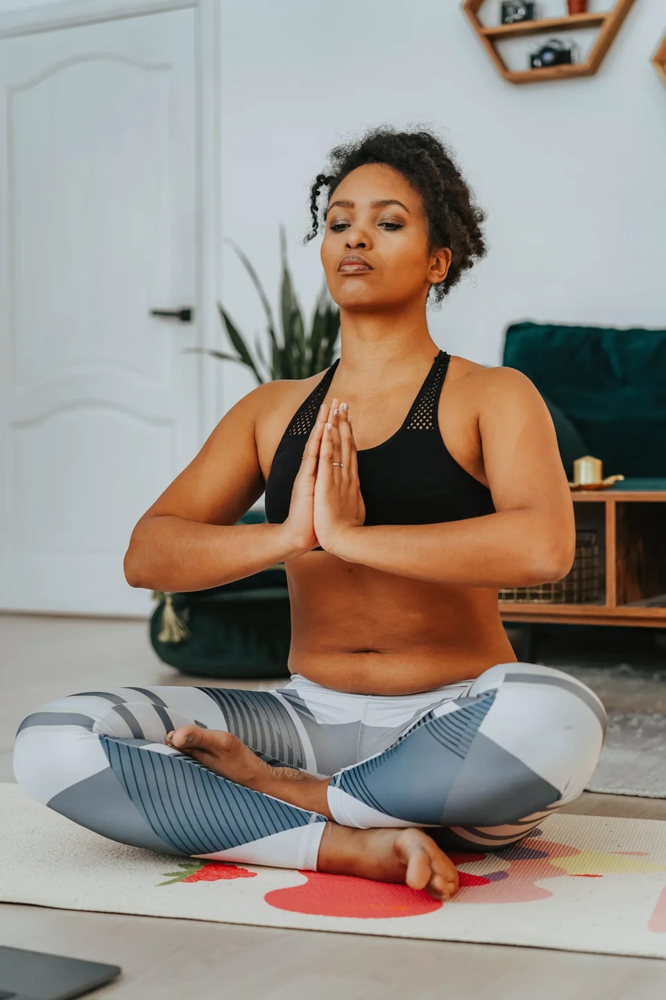

Notice
Recognize patterns, relationships, and emerging dynamics that might otherwise go unnoticed.
 Artune
Artune
Learn. Lead. Transform.
Learn to notice, make sense of, and respond to what emerges.
We bring together systems thinking, psychology, group relations, mindfulness, and practical professional expertise to help individuals, professionals, and organizations navigate complexity and work more effectively with people.
Our perspective
The Dynamics of People Working Together
A different way of seeing groups. A more informed way of working with them.
Our work is grounded in Applied Human Systems—a perspective that looks beyond individual behavior to the relationships, patterns, and conditions that shape our experiences and interactions.
Whenever people come together, there's more happening than what's immediately visible.
Individuals bring their experiences, identities, expectations, and motivations. Groups develop patterns of interaction, informal roles, relationships with authority, and ways of responding to uncertainty. All of this takes place within larger organizational, social, and cultural systems.
These dynamics influence how people collaborate, make decisions, learn, solve problems, and respond to change—often without anyone being fully aware of them.
Applied Human Systems (AHS) draws on systems thinking, psychology, group relations, and systems psychodynamics to examine these interconnected processes and their implications for working with people.
Rather than focusing exclusively on individual personalities or behaviors, AHS invites us to examine the relationships, patterns, and conditions shaping what happens in groups.
Recognize patterns, relationships, and emerging dynamics that might otherwise go unnoticed.
Explore what those dynamics might tell us, connecting our own experience with what we observe in others and the larger system.
Use these insights to make more intentional, authentic, and effective choices about how we participate, intervene, and influence what happens next.
AHS doesn't promise certainty or control over human behavior. It offers a richer perspective for navigating the complexity and uncertainty inherent in working with people.
Awareness in action
Awareness of ourselves. Awareness of the systems we're part of.
At The Artune Collective, we bring insights from Applied Human Systems, psychology, group relations, education, and mindfulness into practical experiences that support personal, professional, and organizational development.
Our work begins with a recognition that we are never separate from the human systems we're part of. Our thoughts, emotions, reactions, and behaviors are shaped by our experiences and relationships, just as our participation influences the people and groups around us.
Through mindfulness practice, we cultivate greater awareness of our internal experience—learning to notice thoughts, emotions, physical sensations, and habitual reactions with curiosity rather than immediately responding to them. This creates opportunities to relate differently to our experiences and navigate everyday life with greater presence and intention.
Through group dynamics training, we extend our attention to the patterns and processes emerging between people. Our internal experience becomes one source of information, considered alongside what we're observing in others and the larger system.
Through educational and organizational consulting, we apply this broader perspective to the practical challenges institutions face. We examine how leadership, relationships, organizational structures, policies, and everyday practices interact to influence outcomes. Combining systems thinking with specialized professional expertise, we help organizations identify underlying challenges and develop sustainable solutions.
These applications are distinct, but they inform one another. Each encourages us to look beyond immediate reactions or presenting problems, consider the larger context, and respond with greater awareness and intention.
Three areas of practice

Cultivate awareness. Make room for more intentional choices.
Our mindfulness offerings combine mindfulness-based practices, movement, reflection, and insights from the science of the mind to help individuals navigate stress, develop greater self-awareness, and bring more presence into everyday life.
Through guided practice and practical exercises, participants develop skills they can use in their daily lives.
Explore Mindfulness & Personal Development →
Go beyond techniques. Learn to work with the dynamics shaping human groups.
Our professional learning programs bring an Applied Human Systems perspective to the practical challenges of working with groups.
Participants learn to recognize emerging dynamics, connect their internal experience with external observations, and make more informed, authentic interventions.
Designed for facilitators, team coaches, consultants, teachers, trainers, and other professionals whose effectiveness depends on working with people.
Explore Group Dynamics for Facilitators →
Thoughtful Systems. Practical Solutions. Stronger Schools.
Schools are complex learning communities. Their success depends not only on the quality of instruction, but also on the leadership practices, relationships, organizational structures, and systems that support teaching and learning.
We partner with public, private, independent, and charter schools to strengthen educational practices, improve organizational effectiveness, and develop sustainable solutions tailored to each school's needs.
Our services include accreditation and continuous improvement, curriculum and instruction, educational leadership, inclusive student support, school culture, responsible AI integration, and strategic school improvement.
Rather than introducing isolated initiatives, we help schools examine how their systems work together, identify underlying challenges, and translate insights into meaningful action.
Explore Educational Consulting & School ImprovementWhether we're supporting an individual's mindfulness practice, helping a professional work more effectively with groups, or partnering with a school to strengthen its systems, our approach is grounded in curiosity, thoughtful inquiry, and practical application.
Meaningful development rarely comes from simply acquiring more information or adopting another technique.
It comes from developing the capacity to notice what is happening, consider what it might mean, and make more intentional choices about what to do next.
Notice more. Make sense of what emerges. Respond with intention.
The Artune Collective
Shibuya Crossing: Catarina Duarte, Pexels (Pexels License). Resized and converted to WebP; displayed with a responsive crop. Ripple and fractal artwork: existing Artune artwork.
Mindfulness: olia danilevich. Group discussion: Yan Krukau. Educational collaboration: Jean-Rene Chazottes. All three photographs used under the Pexels License; resized and converted to WebP.